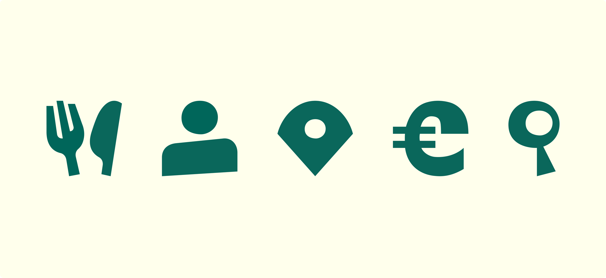
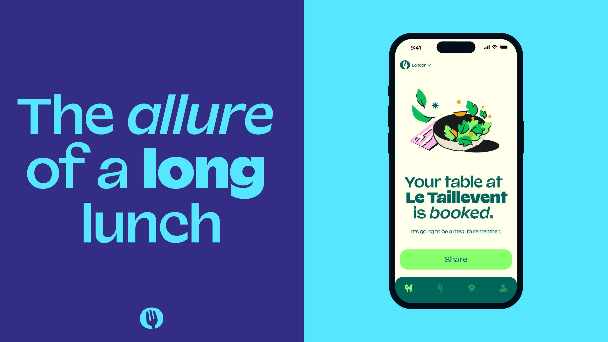

When looking for a new look for their next step as one of the most popular online booking platforms, The Fork came to DesignStudio. Working across many print tests to refine print versions of the colours and assets, I helped bring the design team’s fun and visually delightful designs to life, supplying the client with lots of final assets for them to roll out across the brand.


The very deliberate naming of the colours had to reflect in every touch point, whether it was digital, CMYK print, or Pantone colours. I worked on making sure all three forms of each colour were aligned.



